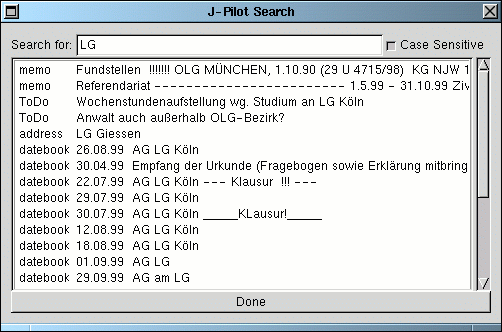

Search allows you to search for strings that may appear in records. Just type the search string into the "Search for" entry and hit enter. The "Case Sensitive" checkbox can be clicked for a case sensitive search. A list of found strings will be listed in the window. Just click on these recordsand the J-Pilot main window will go to the application and the record that matches the one that was selected.